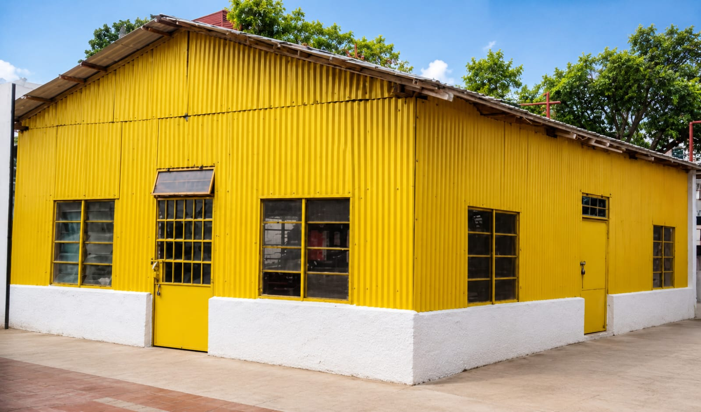
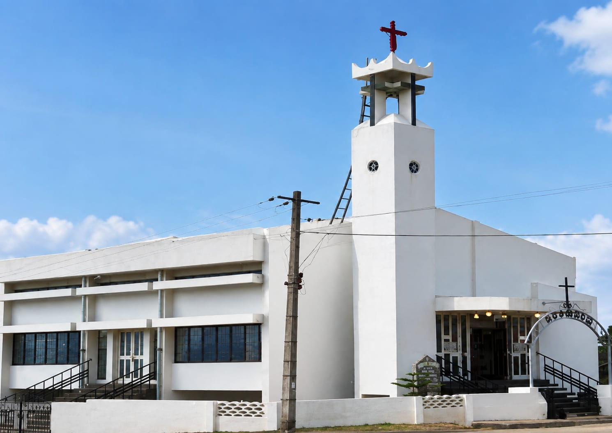

1959–1975
The Beginning
The first phase began with a small Christian congregation in Wilson Garden. The church site was acquired and a temporary prayer hall was established.

The story of Shanthi Church is the story of families, pastors and pioneers who built a place of peaceful worship through prayer, generosity and perseverance.
The Wilson Garden congregation developed from a Sunday School and initially met in a rented car shed. In its early years, worship also took place in homes while the congregation worked toward a permanent church.
The first phase began with a small Christian congregation in Wilson Garden. The church site was acquired and a temporary prayer hall was established.
The foundation stone for the church was laid as the congregation continued building its permanent home.
The next phase saw the completed church building and parsonage take shape through coordinated fundraising and congregational support.
The church was reconstructed as a larger AC church with parish hall and sexton’s quarters, expanding the worship space substantially.
The buildings changed as the congregation grew, but the calling to worship, fellowship and service remained.

The congregation’s story began humbly, gathering in a rented car shed before a permanent church home took shape.

An important chapter in the church’s growth, reflecting the congregation’s continued commitment and shared effort.
The present church continues the same story of worship and service in Wilson Garden.
The historical record repeatedly credits members who gave money, furniture, instruments, fittings, labour and time. The legacy of Shanthi Church is therefore not only architectural — it is communal.
The church history also records the creation of fellowships, mission work, building campaigns and major renovation efforts. These contributions form the living memory of the congregation.